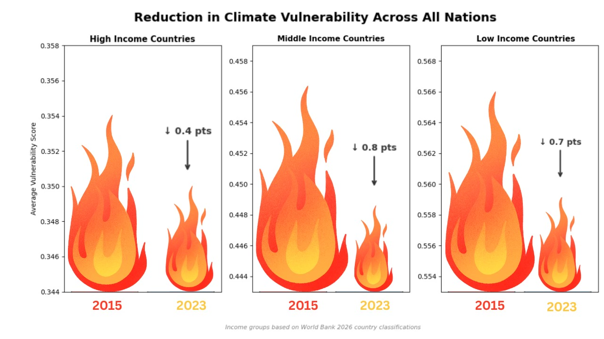

Proposition: Climate vulnerability decreases while readiness increases for all, regardless of income group.
FOR the Proposition

Design Decisions and Rationale:
- Score: −2 Truncated y-axes starting above zero. Each panel's y-axis begins just below the 2023 value rather than at zero, compressing the visible range by a large amount. This makes drops of 0.4–0.8 points (on an index that spans roughly 0 to 1) appear as massive proportional improvements. A reader skimming the chart sees the flames shrinking substantially and never registers that the absolute changes are tiny fractions of the full scale. We considered starting axes at zero but that would have made the declines nearly invisible, which would defeat the deceptive purpose.
- Score: −1.5 Flame icons sized to encode vulnerability scores. Using flame emoji whose visual area encodes the score is deceptive because area perception is nonlinear, so readers' eyes overestimate size differences between large and small shapes. The towering 2015 flame versus the smaller 2023 flame implies a dramatic reduction in climate threat well beyond what the numbers actually show. An alternative was standard bars, but we chose flame because their irregular shape and emotional connotations (danger, heat, crisis) amplify the magnitude of change and how viewers percieve it.
- Score: −1.5 Declarative, assertive title. "Reduction in Climate Vulnerability Across All Nations" states the outcome as established truth before the reader actually examines any data, which primes them to interpret everything with more confidence in the claim and reduces valid, skeptical scrutiny of the axis scales. A more neutral title like "Climate Vulnerability Scores, 2015 vs. 2023" was considered but we rejected it because it lacks the force needed to persuade audiences from the get-go.
- Score: −1 Showing only two endpoints (2015 vs. 2023), leaving out the full time series. Cherry-picking just the start and end years hides fluctuations, plateaus, or reversals that occurred in between that would contextualize the data. A reader cannot tell whether the decline was steady or not, since the snapshot framing implies irrefutable progress across the full period. We considered a line chart over all years but found it revealed too much volatility that undermined the proposition.
- Score: −1.5 Separate panels per income group with independent y-axis scales. Each income group gets its own axis with a different range (e.g., 0.344–0.358 for High Income vs. 0.554–0.568 for Low Income). This makes the visual size of the declines look roughly equivalent across groups, masking the fact that low-income countries remain at substantially higher absolute vulnerability. A reader skimming all three panels will get the impression that all groups are converging and improving equally, when in reality the gaps between them are quite big.
AGAINST the Proposition

Design Decisions and Rationale:
- Score: +2 Plotting net change rather than absolute values. Showing the change score instead of raw values is an honest and direct way to answer whether countries are actually improving. It prevents a reader from confusing a high absolute vulnerability score with stagnation, and ensures that the direction and magnitude of movement is the primary visual signal. This encoding directly supports the proposition by making the divergence between income groups impossible to miss.
- Score: +2 Y-axis appropriately scaled and anchored at zero. Because the chart shows change scores, centering the axis at zero is the correct and honest choice. There is no truncation that would inflate the apparent size of differences — the bars' relative heights truthfully reflect the underlying magnitudes. This contrasts directly with the deceptive visualization and builds credibility with an attentive reader.
- Score: +1.5 Assertive but data-faithful title. The title "Low-Income Countries Present Negative Change in ND-GAIN Index Compared to More Developed Countries" is direct and opinionated, but it accurately describes what the data shows. Unlike the deceptive visualization's title, this one can be verified immediately by looking at the chart, which strengthens rather than undermines reader trust.
- Score: +1.5 Single grouped bar chart for clarity across income groups. A bar chart was chosen over a line chart because the line chart version (which grouped only low-readiness countries) appeared crowded and confusing without prior knowledge of the dataset structure. The bar chart's visual contrast between income groups is much easier to parse at a glance, making the inequality in progress immediately legible to a general audience.
- Score: +1 Combining vulnerability and readiness into a composite net-change score. The ND-GAIN index captures both vulnerability and readiness, and computing a single net change score integrates both dimensions honestly. This avoids the selective presentation of only vulnerability (as in the FOR visualization) and gives a more complete picture of each income group's overall climate resilience trajectory. The tradeoff is some loss of granularity, but the gain in interpretability justifies the aggregation.
Final Reflection
Working on both visualizations simultaneously revealed how thin the line between persuasion and deception genuinely is. Many of the choices we made for the FOR visualization — truncating axes, selecting endpoints, using emotionally evocative icons — are techniques that appear constantly in mainstream data journalism and infographics, often without any malicious intent. What made them deceptive in our case was not the techniques themselves but the combination: each individual choice nudged the reader slightly, and together they constructed a misleading picture that the data alone does not support. What surprised us most was how natural these choices felt in the moment. When you are trying to make a point visually, it is instinctive to zoom in on the relevant range, pick the most favorable time window, and use imagery that reinforces your narrative. Recognizing that instinct as a potential source of harm required deliberate effort.
The AGAINST visualization was in some ways harder to design, precisely because we constrained ourselves to earnest choices. Showing net change anchored at zero, using a full and transparent axis, and writing a title that only claims what the data actually demonstrates felt less visually dramatic — and that difficulty is itself instructive. Honest visualization often requires accepting that the chart will be less immediately striking. The data rarely tells a perfectly clean story, and resisting the urge to sharpen that story through visual sleight of hand is a discipline, not a default.
We now define ethical analysis and visualization as a practice of transparency about what the data can and cannot support, and honesty about the choices made at every step — from which years to include, to how axes are scaled, to what words appear in a title. The boundary between acceptable persuasion and misleading deception is not about the techniques used but about whether those techniques misrepresent the underlying data to a reader acting in good faith. Choosing a color scheme that highlights a trend is persuasion; truncating an axis so that a trivial change looks monumental is deception. The test we found most useful: would a careful reader, shown the full dataset and your design choices, feel misled? If yes, the visualization has crossed from persuasive into deceptive territory, regardless of intent.